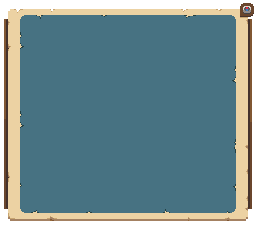

위르드 온라인 위키
홈
튜토리얼
길라잡이
섬
길드
레임홀
레이드
바벨탑
소울 아이템
홈
튜토리얼 안내
길라잡이 안내
섬 안내
길드 안내
레임홀 안내
레이드 안내
바벨탑 안내
소울 아이템 안내
위르드 온라인 섬 정보
개척자님, 어떤 섬으로 항해하시겠어요?
위르드 온라인 항해 지도
원하는 섬을 클릭하여 상세 정보를 확인하세요.

위르드 섬 목록
아래 목록에서도 원하는 섬을 찾을 수 있습니다.